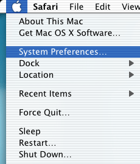
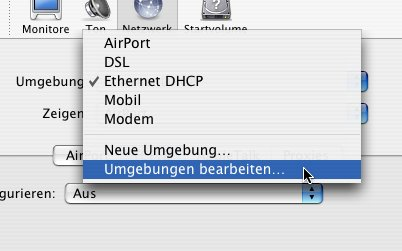

Configurações
para Vários Browsers
Configuração
do JAP para Safari
As
configurações de Proxy não podem ser
directamente introduzidas no Safari, o browser padrão
do sistema MacOS X. Em vez disso, o proxy deve ser modificado
nas confirações de rede do sistema. A seguir
descreve-se como configurar uma nova localização
de rede para haver uma simples mudança entre o JAP e a
navegação padrão não
anónima.
Para configura o JAP para o
Safari, siga os seguintes passos:
1.) Escolha a maçã da barra de menus e de
seguida "System Preferences".

2.) Na janela, clique em "Network" no grupo "Internet
& Network".

3.) Depois, em "Location" field, clique em "Edit
Locations...".

4.) Escolha a localização com a qual normalmente
se liga à internet. Neste exemplo, a
localização chama-se "DSL". Clique em "Copy".
Dê um novo nome a esta cópia para que a possa
reconhecer mais tarde. Neste exemplo, a
localização renomeada chama-se "DSL (JAP)".
Clique em "Finished".

5.) Agora escolha a localização que acabou de
criar. No campo "Show", escolha o mecanismo de rede com que faz a
ligação à internet. No exemplo,
chama-se "Ethernet (integriert)".
Agora clique em "Proxies". Na lista "Choose a proxy server",
marque os campos "FTP Proxy", "Web Proxy", e "Secure Web Proxy".
De cada vez que marcar um desses campos, introduza
"localhost" and "4001" nos campos no lado direito.
Finalmente, introduza "localhost" e "127.0.0.1" no campo "Do not use
proxy settings for the following hosts and domains".
Depois de acabar de introduzir estes dados, clique em "Activate now"
para mudar para a recentemente criada
localização e usar o JAP como proxy no Safari.

Nota:
Se configurar uma porta de escuta diferente
no JAP, tem de introduzir também aqui essa porta, em vez da
4001.
Se não quiser usar mais o JAP, pode mudar para a
antiga localização de rede usando o menu da
maçã como foi anteriormente descrito.